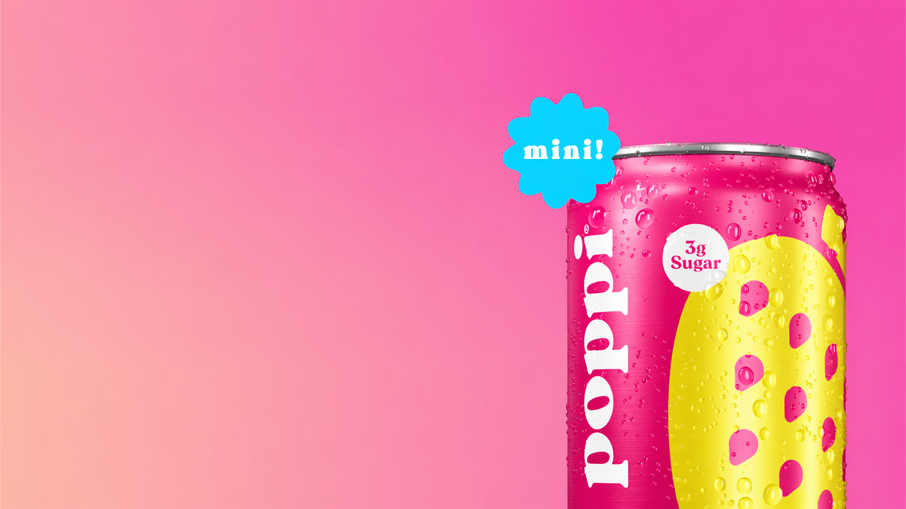
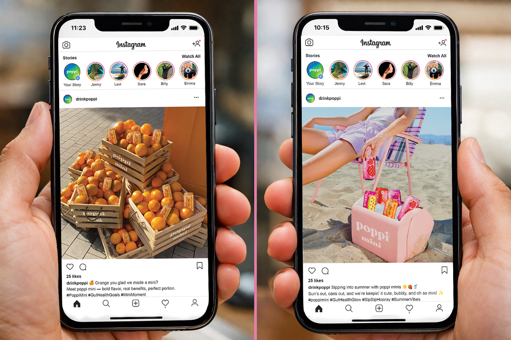
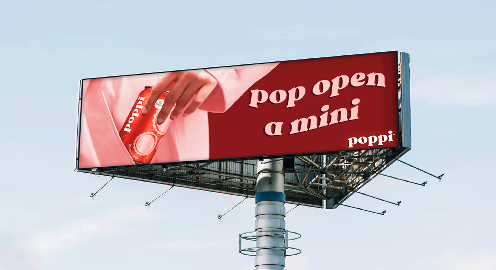

Audience
Gen Z and Millennial consumers who are drawn to wellness products that still feel current, aesthetic, and easy to incorporate into daily life.


Campaign / Art Direction / Brand Design
A playful campaign concept built to introduce poppi's mini can in a way that feels bold, benefits-led, and instantly snackable for modern consumers.
Created for my Persuasive Media Writing and Production class (2025) at the University of Wisconsin-Milwaukee, this campaign explores how poppi could launch a mini can while keeping the brand's bright, bubbly, and instantly recognizable personality.
Overview
poppi mini is a campaign concept designed to promote a smaller-format version of poppi's prebiotic soda. Instead of treating the mini can like just a packaging change, the concept positions it as a fun, convenient extension of the brand that still delivers flavor, function, and personality.
The creative direction leans into bright color, playful typography, and energetic compositions to make the product feel easy to understand, visually exciting, and worth grabbing.
Direction
The launch direction balances product benefits with poppi's fun, approachable voice. The goal was to make the mini can feel exciting at a glance while still staying rooted in wellness, convenience, and strong brand recognition.




Creative Strategy
Gen Z and Millennial consumers who are drawn to wellness products that still feel current, aesthetic, and easy to incorporate into daily life.
Bright, playful, casual, and confident. The messaging stays benefit-led without losing the brand's down-to-earth and culture-forward energy.
The mini can is framed as small in size but big in flavor and function. It feels like a compact extension of the brand, not a lesser version of it.
Create a campaign system that makes the new format feel recognizable, desirable, and flexible across social, print, and out-of-home placements.

Visual System
Each execution was designed to feel punchy, bubbly, and easy to read while still carrying a strong brand point of view. Together, the assets create a campaign world that feels cohesive but never flat.
What I liked most about this project was being able to combine strategic thinking with playful visual storytelling. It reflects the side of my work that lives between branding, culture, and commercial design.